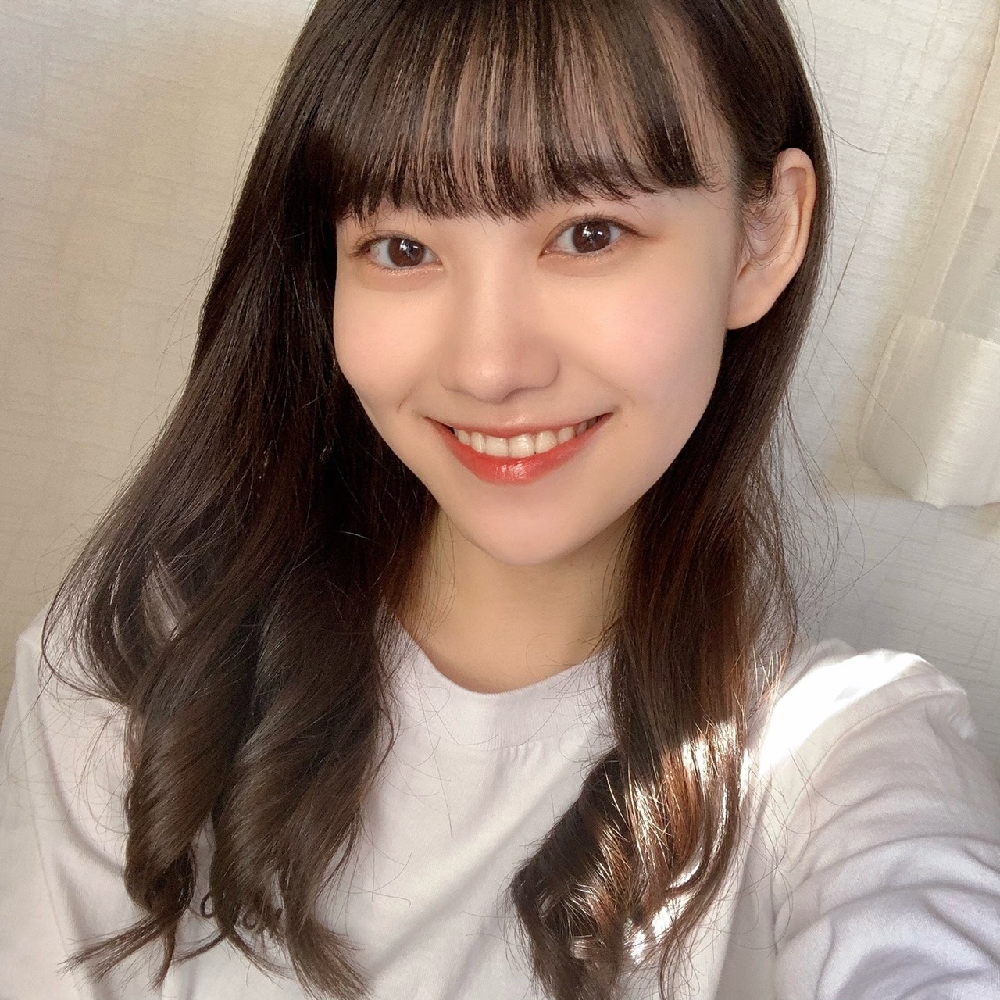
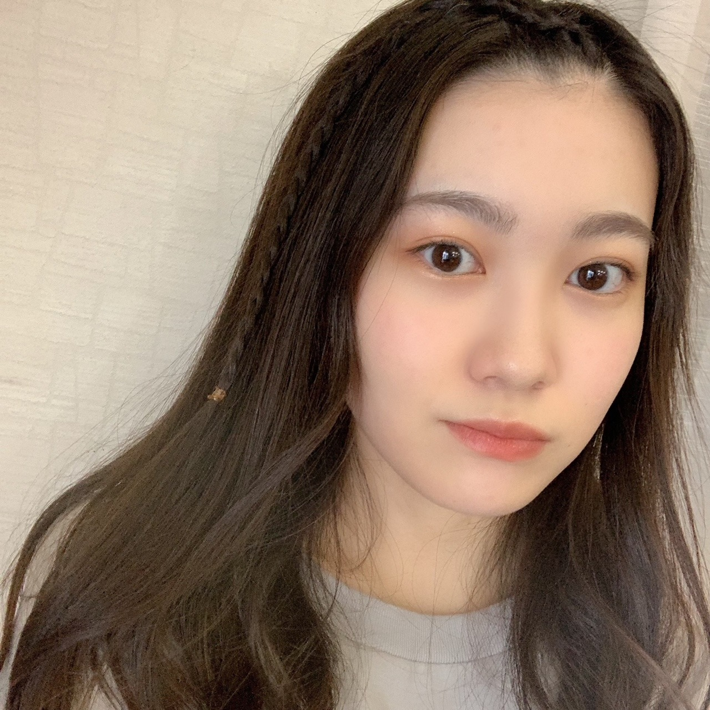
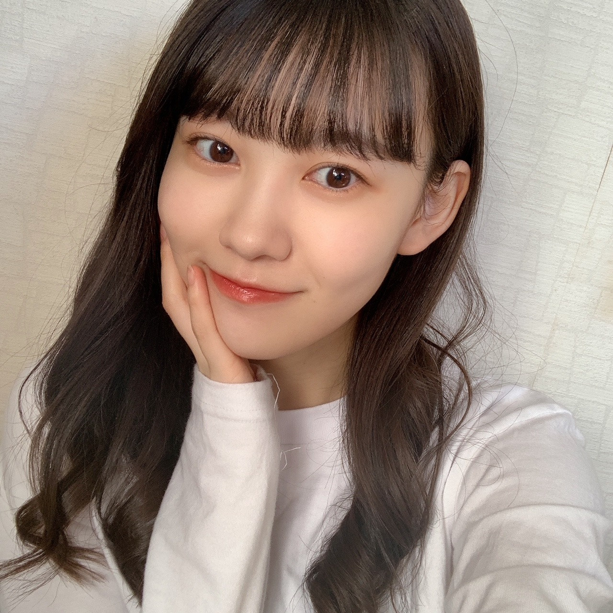

2020/1121Sat幸せ色 松尾美佑
なんだか春みたいな天気ですね。
あったかくて、
風が強い。
不意に飛ばされないように気をつけましょう
( ఠ͜ఠ )
高校2年生
16歳
最近前髪が長かったので昨日の夜、何も考えないでタッタカ前髪切りました。
松尾美佑です。
ちょっと切り過ぎた所があったりなかったり。
まぁ、伸びるから。
大丈夫さ。
٩( ᐖ )۶
へへっ
前髪じゃなくて全体な髪の毛も割と伸びたなぁと最近思うことが多くて、
ちょこっと切りたいなぁって思ったりしていたりしていなかったり。

髪の毛まきまきした直後に撮ったのであんまり可愛いまきまきではないですね。
もーちょっと髪の毛同士が離れると良い感じですね
あ、お姉ちゃんの髪の毛まきまき借りました
私のは引き続き壊れ中です。
そして割れてしまった携帯画面なのですが、
内カメの所のヒビが写真に写らないかドキドキしていたのですが
頑張れば大丈夫そうです！
手がやや小さめ人間なので次の携帯は落とさないように小さめサイズがいいなと思い中です。
ちょっと最近の話をもうちょこっとしますね
前回寝坊したーって書いたら快適に起きれるアプリをコメントでオススメして下さって
ありがとうございました！
入れたんですよ、
そしたら何時間しっかり寝てたかとか、
眠りが浅い時に起こしてくれたり、
すっごく優しいんです。
お陰様で最近楽しく早起きできてます！
11月20日！
さやかちゃん！お誕生日おめでとう！
掛橋ちゃんって名前が綺麗で好きで何となく掛橋ちゃんって読んでたりしたけど最近はさやかちゃんって呼びたい気分です(๑ت๑)
前髪も髪の毛も切ったの本っ当に似合ってて可愛い！
素敵な1年になりますように⸜❤︎⸝
お返事〜
✽ みゆちゃんが旅行にもしも行くとしたらどこにいってみたいですか。
国内だったら青森、沖縄、京都に行きたいです！
海外だったら綺麗な海がある場所とか、イタリアにも行ってみたいなって前から思ってたり、スウェーデンにも行ってみたかったり、
沢山過ぎて上げたらキリがないです！
✽ さっきまで何してましたか？
大学芋食べてました。
ちなみに今は干し芋食べてます。
✽ 人生最後のご飯を食べるなら
焼肉？お寿司？
お鍋。辛いの。
二択を無視しました。
✽ 俺も天気と仲良しなんだけど、太陽の名前って陽子さんだよね？
ごめん、太子さんなんだ...。
読み方は、たいこさん。
✽ 前髪のヘアアレンジを教えてください！

根元から編み込みして途中から三つ編み！
またなにかしたら報告しますね( ¨̮ )
✽ ミュウちゃんが本当にジェットコースター乗ったらどんなリアクションになるの？
（泣く？ 叫ぶ？ 笑う？ 黙る？）
笑うか黙ります٩( ᐖ )۶( •̅_•̅ )
明日は〜
なお〜〜〜〜〜〜〜〜〜〜
先日ぱるとまりぃちゃんに会えて嬉しかったね！！！！⸜❤︎⸝⸜❤︎⸝⸜❤︎⸝
また5日後！
ミュウでした¨̮

ばいっっっっっっっ( Ꙭ )/''

PROFILE
新4期生リレー
202104
| SUN | MON | TUE | WED | THU | FRI | SAT |
|---|---|---|---|---|---|---|
| 1 | 2 | 3 | ||||
| 4 | 5 | 6 | 7 | 8 | 9 | 10 |
| 11 | 12 | 13 | 14 | 15 | 16 | 17 |
| 18 | 19 | 20 | 21 | 22 | 23 | 24 |
| 25 | 26 | 27 | 28 | 29 | 30 | |

コメント(212)
占いってしたことある？？
好きなおでんの具材は？
３連休のスタートからみゆりんブログが読めて嬉しい☺︎
私はもうテスト終わったから3連休寝まくるつもりなんだけど、ほかの学校はまだ終わってないから勉強とっても大変そうなんだー
みゆりんはテスト終わったかな？笑
まだだったら頑張ってね☺︎応援してる
前回のブログ読んだ後から5日間
みゆりんの携帯直ったかな？？
ってずっと思ってた(ずっとは盛ったかも)
大丈夫そうでよかった笑
✂︎- - - - - - - -キリトリ- - - - - - - - - - -✂︎
一枚目の写真の巻き髪めちゃくちゃ可愛い！！
お姉ちゃんからコテ借りれるの羨ましい〜
ジェットコースター乗って笑えるのすごい笑
私泣き叫んじゃうんだよねー笑
今度富士急のジェットコースター乗って見てほしい
めちゃくちゃ怖いから笑
✂︎- - - - - - - -キリトリ- - - - - - - - - - -✂︎
みゆりんが踊ってるとこ、歌ってるとこ
見れる日まであと1ヶ月もないって考えたら
胸がドキドキしてきたよ笑
今日も質問で終わりにするね☺︎
【質問】
✽好きな漫画はある？あったら紹介して欲しい¨̮
✽太子さんについて教えて笑
今日も素敵なブログをありがとう(⑉• •⑉)❤︎
また5日後楽しみにしてるね！
おでこだしてるのもかわいい！
前髪ありも、デコ出しもまじいつも可愛すぎる
春一番の頃みたいな気候が続き、
ガチで今いつだったっけ？となりました。
調子狂っちゃいますよね～～
携帯、どうにかなりそうで何よりですｗ
ミュウといえば、
小泉今日子さんの往年の名曲、
「夜明けのMEW」（ミューと読む）はご存じですか？
4期生ライブに向けて大変だろうと思います。
くれぐれもご自愛ください！！
ケータイのカメラ無事でよかったです！
いつも笑顔なところに元気もらってます！4期生ライブあって、今は色々大変だと思うけど、休める時はしっかり休んでね！ライブ絶対見に行くから頑張って！！
前髪急に切っちゃうみゆちゃん可愛いです笑
三つ編みすごい似合いますね……
好きですね
ブログまた待ってます！
アラームアプリお役にやったようで何よりです（´-`）.｡oO
アニメのお嬢様キャラみたいな縦ロールだね笑
でも、とっても可愛いよ
ｸﾙｸﾙ(・ω・*)(ω・* )(・* )(* )( )( *)( *・)( *・ω)(*・ω・)ｸﾙｸﾙ
あみこみ良き良き！！
ハーフツインとか見てみたい〜
◎辛いものってどこくらいの辛さまで食べられる？
◎コーヒーはブラックで飲めますか？
◎映画館いくときはどこに座ることが多い？
あ、乃木フェスでananコラボのミュウちゃんのカード当たりました！可愛くて癒しです(*´ー｀*)
じゃ、ばいばぃ
巻き髪もなんでも似合うのがまた良いですね〜！ショートヘアとかもやってほしいな〜なんて思ったりもしますね笑
インカメラなんとか無事そうで良かった良かった！笑。ヒビが写ってる写真もそれはそれで味がありそうだから、それも見て見たい気気もする…笑
また5日後楽しみにしてます！お疲れさん！
質問しまーす
Q.家帰ってからのルーティーン教えて〜
まきまき、とっても似合ってます。可愛いね:-)
スウェーデン！オーロラが見れるんだよね。良いね。
北野日奈子ちゃんの写真集がスウェーデン撮影で雪景色が綺麗だったよー。
みゅうちゃん、またね:-)
今回も写真可愛すぎよ！
前髪切りすぎても絶対かわいいよー！
早寝早起きはめっちゃ気分がいいよね！
質問初めてします！
最近の楽しかったことはなに？
よろしくね〜！笑
かわいいよ(*´ω｀*)
この前のブログでスマホの画面割れたって言ってたけど、僕も昨日、車乗った時に、スマホ落として車の扉閉めると同時に挟んで画面割れました笑。結構ショック受けた…笑
あと、前髪僕も切ったよー、すぐ伸びるからOKだよね笑
寒くなってきたね。
あ、あと質問答えてくれてありがとう笑
僕は人生最後に食べたいご飯は、ウニです！
鍋もいいね！
そしてそして、
最後に質問！
4期生ライブへの意気込み！教えてください！
今日の写真も可愛いねぇ
質問返しで旅行に行くなら青森か沖縄か京都って行ってたけど青森はなんでかな？？？
やっぱり甘いもの好きなミュウちゃんはリンゴが食べたいのかな？
また5日が楽しみにしてるねー！
もし、自分が生まれ変わるなら、何になりたい？？
よろしく！
今日大学があってその帰りの電車でブログ読んでます。
みゆちゃんがオススメしてもらったアプリってぼくのにも入ってるやつと同じかも！？浅い時に起こしてくれるやつ！寝言とかとれるんよね〜w
写真完璧じゃん！もっとぼやぼやを想像してたから全然じゃん！って思ったw
スマホは大きい方が動画見る時はいいけど小さめの方が実用的かな？？？
〇質問
最近寒くなったけどお気に入りの服は？？？
キメ顔して！はい、3.2.1！どん！
ぱるとまりぃちゃんには会えたけど、みくにんには会えなかったんだね〜(´TωT｀)
みくにんとみゆちゃんってどっちが身長大きかったっけ？？？みくにんの方が大きいイメージだけど？w
また、5日後にオアイシマショウ
ぽぽぽ
最近暑いですね〜！毎日半袖生活です！
巻いた髪、凄く似合ってるよ。かわいい。これからいっぱい練習頑張ってね、今日も好きです。
スマホ早く直るといいね、美佑ちゃんのかわいい写真がもっと見たいです
4期生ライブ凄く楽しみにしています！！今、自分は大学の卒論を書いている最中なのですが、4期生ライブまでに終わらせて、全力で楽しみたいと思います！！
美佑ちゃんがなんの曲でセンターやってくれるか、本当に楽しみです
Q.沖縄に住んでいるのですが、どこか行きたいところありますか？？
Q.センターをやってみたい曲はありますか？？
今日、髪の毛を切りに行きました。
いつもの人にやってもらったよ。
質問です
最近のマイブーム教えて欲しいです
ちなみに僕はswitch版の桃鉄を買いたいと思ってるよ
美佑ちゃんの巻き巻きとかほんとに可愛すぎて癒しです…♡
毎回ブログで色んな髪型を見せてくれるから見てて読んでてすごい楽しいです！
ハーフツインとか久々にツインテールが見てみたいなあ…笑
質問！
洋食、和食、中華どれが好きですかー？
ブログ更新ありがとう！
また読めるのを楽しみにしてます！
これからの活躍期待してますよ！
応援してます！！
ほんとにここ二日間くらいめっちゃ暖かったよね〜！なのにまた今日寒くて気温の変化についていけない笑笑最近学校でも体調崩してる人多いからみゆちゃんも体調には気をつけてね〜！！
私も最近髪の毛を切ろうか迷い中なんだ〜！ずっとショートで1年くらい伸ばしてミディアムくらいまで伸びたんだけどまたショートが恋しくなってる、、次はマッシュに挑戦しよかなとか思ってます笑笑
あと私も手小さい方なんだ〜！身長は高い方なんだけど手小さいからよく驚かれます笑笑また握手会再開ときに手比べしてほしいな〜！多分私の方が小さい…かも、、
最後に質問する〜！
○おすすめの韓ドラはありますか？？
最近休みの日韓ドラしか見てないのでオススメ教えてほしいです〜！私は最近キム秘書はいったいなぜをずっと見返してます笑笑
またブログまってるねーー！
とってもかわいい。
やはりおでこ出しは
良いですね。
三つ編みもまた
すごくかわいい。
このお写真のメイク好き
です。
Cカールでニット帽子
なども凄く似合うと
思います。
ニット帽子。
どんな髪型でも。
もう少し寒くなったら
見てみたいです。
私は今日のお写真何度も見て
しまうでしょう。
本日はおでこに癒されております(笑)
三つ編みめっちゃかわいい！！
ミュウちゃんそんなに寝坊結構するの？(笑)
でもアプリ教えてもらってよかったねぇ！
コロナもまた流行ってきて大変だけどお互い気を付けようね…
またブログ更新楽しみにしてます！
くまくまでしたっ！
ミュウちゃんは何の髪型しても似合いそうだからいっぱい違うミュウが観れることに楽しみにしてます。
【質問】
今年が終わるまでにやっちゃいたいこと、終わらせておきたいことありますか？
このコメントが読まれるように今日から正座して祈っておきます
前髪パッツンでも、そーじゃなくても可愛エエ
気温どんどこ下がっていくだろから気をつけてちょ
今日は風が強くて冬を感じました。
コチラは風が強くて有名な地方なので、毎日の自転車登校がつらくなって参ります。
前髪カットミュウちゃんも可愛いよ(^^)
内カメラが無事でなんとかなりそうでよかったね！
5日前にブログ見たのにもう5日経っててやばいです∑(ﾟДﾟ)
ミュウちゃんは1日が早く感じるタイプ？そうじゃないタイプ？
ブログ更新ありがとう！次回も楽しみにしてます！
では！バイジョーじ！
課題の合間に美佑ちゃんのブログで癒されました
前回カメラ部分にヒビが入ったと聞いて心配だったので大丈夫そうで良かったです
細い三つ編み お洒落さんって感じがしてとっても素敵です
やっぱり色んな髪型見れるの嬉しいです
質問です
最近ハマってる食べ物はありますか？
コートは着ますか？
パーカーのフード被って欲しいです (´∩ω･∩｀)
また、5日後楽しみに待ってます
あと半月だー へ(￣_￣へ)(ノ￣_￣)ノ
巻き髪にしたミュウちゃんいつ見ても綺麗だなって思うよ♪
前髪ないのも新鮮だし、美人だからなんでも似合うよね◎
次回のスキッツではスマイルガールズ入りおめでとう！
ゆんちゃんと一緒にチアできるし、めっちゃ嬉しいよね♪
ライブ準備大変だと思うけど、頑張って振り付け覚えてね！
応援頑張るね！
早くモバメはじまらないかな〜
前髪上げてるの似合うよ〜
ミュウツー
俺も数日前に何も考えず髪を切りました…ちょっとミスりました笑笑
毎日勉強続きでしんどい時にみゆちゃんのブログ読んで
癒されとります(*´ω`*)
高校とかの勉強なら無理矢理詰め込めば何とかなったのにな〜笑
質問！！
みゆちゃんが勉強する時どうやって集中してる？
もしくは集中切れた時どうしてる？
またねーヾ(｡･∀･｡)
お鍋が美味しい季節
好きなお鍋のダシの味、好きな具材を教えて下さい。
ありがとう
喜章（よしあき）
前髪のヘアアレンジ参考にさせてもらうね
これからも応援してます♥
ブログの更新待てたよ！
ふるさとは今日雪だったが、東京は暖かくびっくりした。でも来週気温がもっと低くなるそうだから、気おつけてね。
ミュウちゃんの隣の機械がなんか心配にかけるようになった(笑)
質問
ミュウちゃんの家は正月で何を必ず食べる？そして、正月はいつもどうやって過ごすかが気になる！
4期ライブ順調に進むか、期待するよ、頑張ってね
大人になったら本当に綺麗な女性になると思う！
乃木坂を引っ張ってほしい！
コメントする